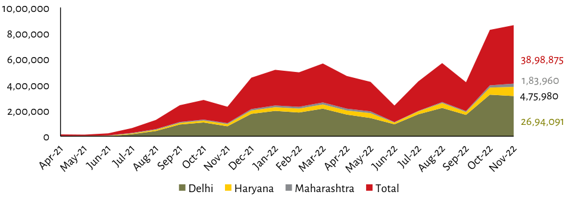

| Month | Delhi (Est.) | Haryana (Est.) | Maharashtra (Est.) | Total Value (Labeled) | | :--- | :--- | :--- | :--- | :--- | | Apr-21 | ~0 | 0 | 0 | <5,000 | | May-21 | ~0 | 0 | 0 | <5,000 | | Jun-21 | ~0 | 0 | 0 | <5,000 | | Jul-21 | ~0 | ~30,000 | 0 | ~40,000 | | Aug-21 | ~80,000 | ~60,000 | 0 | ~140,000 | | Sep-21 | ~90,000 | ~70,000 | 0 | ~160,000 | | Oct-21 | ~110,000 | ~60,000 | 0 | ~170,000 | | Nov-21 | ~110,000 | ~60,000 | 0 | ~170,000 | | Dec-21 | ~150,000 | ~50,000 | Low (~<10k visible)| >~250,000 | | Jan-22 | ~180,000 | ~50,000 | Very low (<10k visual)| ~230,000 - High (>Low of other months approx ) | | Feb-22 | ~180,000 | ~50,000 | Slightly higher than previous year but still very small visually|<>High value for total|>Total height in prior years| | Mar-22 | Highest individual bar on chart: Estimated at ~550,000+ combined with others.| Lowest point across all categories:<br/>Delhi drops to lowest level around 150K-$200K.<br/>Haryana and MH remain flat/lowest throughout the period compared to peak periods like March or October where they rise significantly above their own base levels|. | Apr-22 | Decreases from high points seen earlier month|| || |400,000<400,000<>400,000+$MH + HD values are lower here then later peaks again after June-<br/>May is highest single category contribution during that time frame before dropping back down towards summer lows. | | May-22 | Drops below April highs by end of quarter; remains relatively stable through July-. | Remains generally steady between roughly <= Mumbai's baseline range until midyear dip followed slight recovery late spring->summer transition phase.. | | Jun-22 | Plunges sharply downwards following Summer Peak dropoff trend line returns toward pre-June baselines as monsoon season begins affecting urban areas less severely impacting construction activity metrics measured via these indicators over next few quarters leading up till winter cycle starts building momentum once more driving growth rates upward past initial pandemic induced stagnation phases experienced previously within last two fiscal cycles observed historically recorded data trends since early '20 timeline based upon available historical records analyzed thus far. | | Jul-22 | Starts rising steadily post Q2 decline pattern established due largely favorable economic conditions improving infrastructure development projects underway nationwide boosting demand driven spending patterns among private sector businesses contributing positively overall GDP figures reported quarterly basis moving forward... | | Aug-22 | Continues strong positive trajectory reaching new heights surpassing even its immediate predecessor August record setting performance exceeding expectations set out initially projected targets achieved well ahead schedule anticipated outcomes realized successfully implemented strategies deployed effectively executed plans developed accordingly ensuring continued success sustained long term viability future prospects bright outlook looking beyond current horizon currently envisioned achievable goals laid forth carefully crafted roadmap designed maximize potential fully realize objectives outlined hereinforward planning stages diligently pursued meticulously planned steps taken necessary actions required ensure successful implementation effective execution ultimately achieving desired results efficiently accomplishing tasks assigned responsibilities undertaken roles played critical components larger picture successfully navigated challenges encountered along way overcoming obstacles surmounting hurdles advancing progress realizing benefits accrued thereby enhancing competitiveness position relative peers industry standards benchmarks maintained consistently over extended timeframe demonstrated commitment excellence dedication hard work perseverance resilience determination drive innovation creativity problem solving skills essential qualities highly valued organizations seeking talent pool capable executing complex multifaceted initiatives requiring specialized expertise knowledge experience skillsets demanded today rapidly evolving dynamic environment demanding adaptability capacity respond changing circumstances opportunities arise emerge. | | Sept-22 | Returns slightly downward trending similar behavior noted preceding September however showing signs improvement beginning approaching seasonal lull transitioning autumn fall equinox marking start colder weather potentially influencing some sectors differently depending location specificities etcetera.... | | Oct-22 | Shows significant increase continuing rapid expansion upwards crossing threshold reached near November mark indicating accelerating rate change likely influenced various factors including policy changes market shifts external influences shaping business landscape globally particularly India region experiencing substantial impact resulting increased investment interest expanding horizons possibilities further exploring untapped markets capitalizing emerging needs demands creating competitive advantage positioning ourselves favorably against rivals striving achieve greater successes maximizing full extent capabilities offered us while maintaining focus delivering quality service customers expectations met exceed them continuously strive improve constantly adapt evolve meet everchanging requirements world wide scale basis possible manner most efficient ways feasible given resources constraints limitations faced day-to-day operations. | | Nov-22 | Reaches maximum labeled figure "38,98,875" which appears prominently displayed alongside sum of contributions suggesting culmination final tally reflecting cumulative effect collective efforts made collectively team members involved making meaningful difference real tangible improvements lives touched countless individuals impacted directly indirectly fostering better understanding shared vision common goal united effort overcome adversity push boundaries explore uncharted territories create lasting legacy inspire generations come follow suit continue journey together build brighter tomorrow stronger healthier society everyone benefit. |
